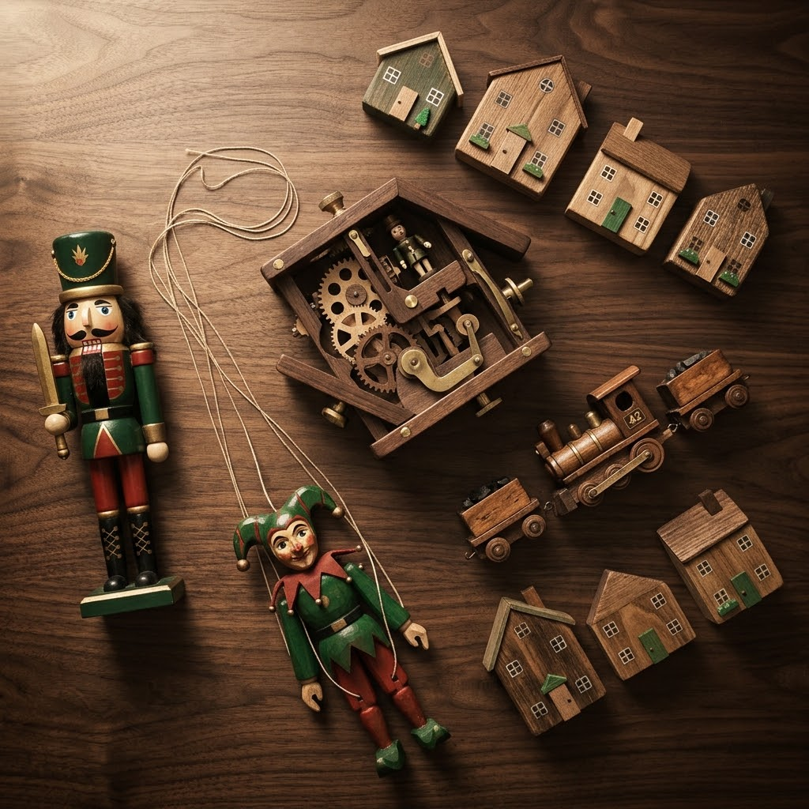
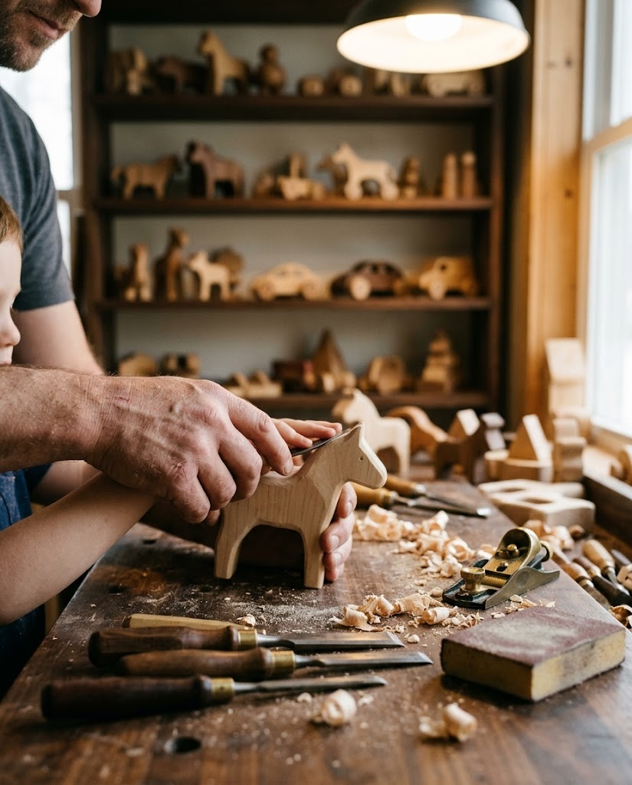

遊べる木のおもちゃ
からくりおもちゃ、くるみ割り人形、あやつりおもちゃなど、多彩な展示が並びます。親子で楽しみながら学べます。
北海道遠軽町 1998年開設
木のぬくもりに、時を忘れる。
世界の木のおもちゃが、ここに。
ちゃちゃワールドは、1998年に北海道遠軽町で開設された木のおもちゃのミュージアムです。地域の基幹産業だった木材をテーマに、子どもから大人まで、遊びながら学べる場を目指してきました。
はじまりは1985年。ひとりの中学教師が開いた、木のおもちゃ作り講座でした。その小さな灯りは、やがて世界約40か国、約1万点の木製おもちゃを収蔵・展示する専門ミュージアムへと育ちました。

見て、触れて、つくる。三つの楽しみ方があります。
からくりおもちゃ、くるみ割り人形、あやつりおもちゃなど、多彩な展示が並びます。親子で楽しみながら学べます。
光と影が織りなす世界を、1階から2階にかけて体感できます。水面や鏡を使った工夫にも出会えます。
常設展示を通じて、地域産業の歴史と文化を次の世代へ伝える役割を担っています。

専門スタッフの指導のもと、木のおもちゃ作りを体験できます。自分の手でかたちにする時間は、子どもの創造性を育む学びにもなります。旅の思い出に、世界にひとつのおもちゃをどうぞ。
Googleマップに寄せられたクチコミより
夫婦旅行で訪れました。空いてたので、ゆっくり見学できました。木製の模型からカラクリ玩具まで、大人も子供も楽しめます。SLは「本当に木製なの！？」と思うくらい精巧に作られていて、驚きました！影絵ミュージアムもあり、こちらは子供の情操教育にとてもいいですよ。
ホテルのエントランスのような、スタッフのお辞儀から始まり驚きました。中に入ると、まず左手の影絵に圧巻。2階の遊び場スペースは親子で創意工夫して遊べる余白があり、非常によかったです。授乳スペース、子ども用トイレなどの配慮も完璧でした。毎月のようにイベント、ワークショップなども開催しています。総じてオススメです。